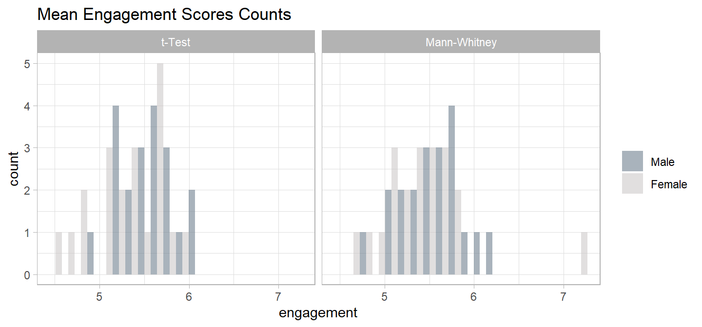
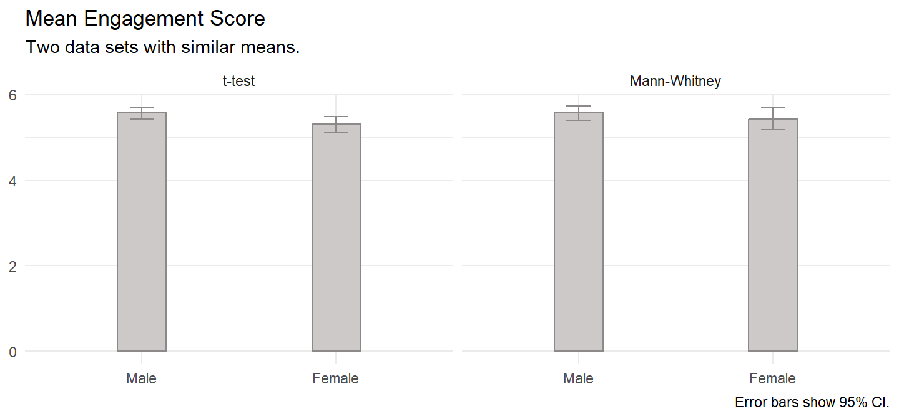
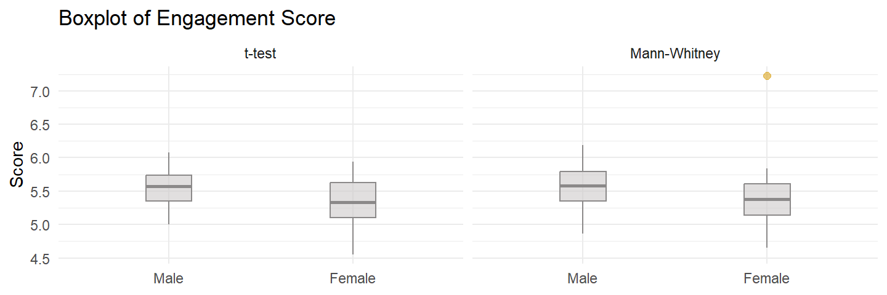
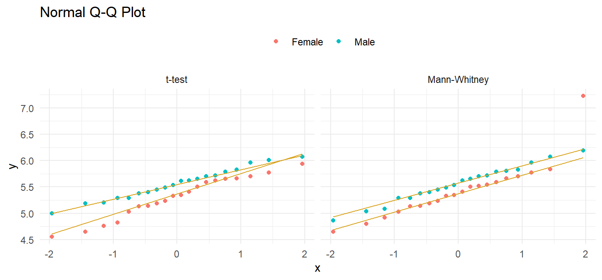
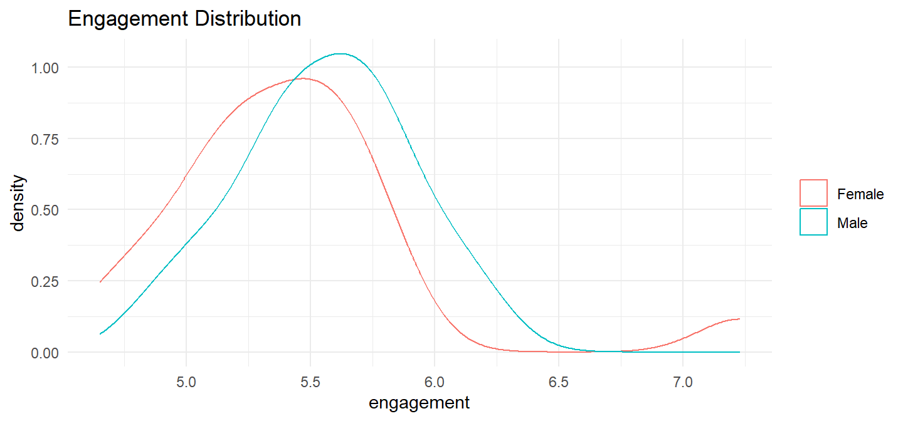
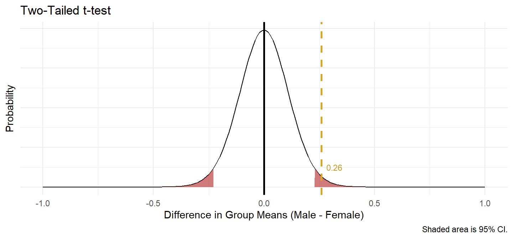

Case Study 1
A company shows an advertisement to \(n_M\) = 20 males and \(n_F\) = 20 females, then measures their engagement with a survey. Do the groups’ mean engagement scores differ?
Laerd has two data sets for this example. One meets the conditions for a t-test, and the other fails the normality test, forcing you to use the Mann-Whitney U test.


The t-test data set has the following summary statistics.
(ind_num$t_gt <- ind_num$t_dat %>%
gtsummary::tbl_summary(
by = c(gender),
statistic = list(all_continuous() ~ "{mean} ({sd})")
))| Characteristic | Male, N = 201 | Female, N = 201 |
|---|---|---|
| engagement | 5.56 (0.29) | 5.30 (0.39) |
| 1 Mean (SD) | ||
There were 20 male and 20 female participants. Data are mean \(\pm\) standard deviation, unless otherwise stated. The advertisement was more engaging to male viewers, 5.56 (0.29), than female viewers, 5.30 (0.39).
The Mann-Whitney data set has the following summary statistics.
(ind_num$mw_gt <- ind_num$mw_dat %>%
gtsummary::tbl_summary(
by = c(gender),
statistic = list(all_continuous() ~ "{mean} ({sd})")
))| Characteristic | Male, N = 201 | Female, N = 201 |
|---|---|---|
| engagement | 5.56 (0.35) | 5.43 (0.53) |
| 1 Mean (SD) | ||
There were 20 male and 20 female participants. Data are mean \(\pm\) standard deviation, unless otherwise stated. The advertisement was more engaging to male viewers, 5.56 (0.35), than female viewers, 5.43 (0.53).
Conditions
The independent samples t-test and Mann-Whitney U test apply when 1) the response variable is continuous, 2) the independent variable is binomial, and 3) the observations are independent. The decision between the t-test and Mann-Whitney stems from two additional conditions related to the data distribution - if both conditions hold, use the t-test; otherwise use Mann-Whitney.
- Outliers. There should be no outliers in either group. Outliers exert a large influence on the mean and standard deviation. Test with a box plot. If there are outliers, you might be able to drop them or transform the data.
- Normality. Values should be nearly normally distributed. The t-test is robust to normality, but this condition is important with small sample sizes. Test with Q-Q plots or the Shapiro-Wilk test for normality. If the data is very non-normal, you might be able to transform the data.
If the data passes the two conditions, use the t-test, but now you need to check a third condition related to the variances to determine which flavor of the t-test to use.
- Homogeneous Variances. Use pooled-variances if the variances are homogeneous; otherwise use the separate variances method. Test with Levene’s test of equality of variances.
If the data does not pass the first two conditions, use Mann-Whitney, but now you need to check a third condition here as well. The condition does not affect how to perform the test, but rather how to interpret the results.
- Distribution shape. If the distributions have the same shape, interpret the Mann-Whitney result as a comparison of the medians; otherwise interpret the result as a comparison of the mean ranks.
Checking for Outliers
Assess outliers with a box plot. Box plot whiskers extend up to 1.5*IQR from the upper and lower hinges and outliers (beyond the whiskers) are are plotted individually.

For the t test data set,
There were no outliers in the data, as assessed by inspection of a boxplot.
and for the Mann-Whitney data set,
There was one outlier in the data, as assessed by inspection of a boxplot.
If the outliers are data entry errors or measurement errors, fix or discard them. If the outliers are genuine, you have a couple options before reverting to the Mann-Whitney U test.
- Leave it in if it doesn’t affect the conclusion (compared to taking it out).
- Transform the variable. Don’t do this unless the variable is also non-normal. Transformation also has the downside of making interpretation more difficult.
Checking for Normality
Assume the population is normally distributed if n \(\ge\) 30. Otherwise, assess a Q-Q plot, skewness and kurtosis values, or a histogram. If you still don’t feel confident about normality, run a Shapiro-Wilk test.
There are only \(n_M\) = 20 male and \(n_F\) = 20 female observations, so you need to test normality. The QQ plot indicates normality in the t-test data set, but not in the Mann-Whitney data set.
bind_rows(
`t-test` = ind_num$t_dat,
`Mann-Whitney` = ind_num$mw_dat,
.id = "set"
) %>%
ggplot(aes(sample = engagement, group = gender, color = fct_rev(gender))) +
stat_qq() +
stat_qq_line(col = "goldenrod") +
theme_minimal() + theme(legend.position = "top") +
facet_wrap(~fct_rev(set)) +
labs(title = "Normal Q-Q Plot", color = NULL)
Run Shapiro-Wilk separately for the males and for the females. Since we are looking at two data sets in tandem, there are four tests below. For the t-test data set,
(ind_num$t_shapiro <- split(ind_num$t_dat, ind_num$t_dat$gender) %>%
map(~shapiro.test(.$engagement))
)## $Male
##
## Shapiro-Wilk normality test
##
## data: .$engagement
## W = 0.98344, p-value = 0.9705
##
##
## $Female
##
## Shapiro-Wilk normality test
##
## data: .$engagement
## W = 0.96078, p-value = 0.5595Engagement scores for each level of gender were normally distributed, as assessed by Shapiro-Wilk’s test (p > .05).
For the Mann-Whitney data set,
(ind_num$mw_shapiro <- split(ind_num$mw_dat, ind_num$mw_dat$gender) %>%
map(~shapiro.test(.$engagement))
)## $Male
##
## Shapiro-Wilk normality test
##
## data: .$engagement
## W = 0.98807, p-value = 0.9946
##
##
## $Female
##
## Shapiro-Wilk normality test
##
## data: .$engagement
## W = 0.8354, p-value = 0.003064Engagement scores for each level of gender were not normally distributed for the Female sample, as assessed by Shapiro-Wilk’s test (p = 0.003).
If the data is not normally distributed, you still have a couple options before reverting to the Mann-Whitney U test.
- Transform the dependent variable.
- Carry on regardless - the independent samples t-test is fairly robust to deviations from normality.
Checking for Homogenous Variances
If the data passed the outliers and normality tests, you will use the t-test, so now you need to test the variances to see which version (pooled-variances method if variances are homogeneous; separate variances if variances are heterogeneous). A rule of thumb is that homogeneous variances have a ratio of standard deviations between 0.5 and 2.0:
sd(ind_num$t_dat %>% filter(gender == "Male") %>% pull(engagement)) /
sd(ind_num$t_dat %>% filter(gender == "Female") %>% pull(engagement))## [1] 0.7419967You can also use the F test to compare the ratio of the sample variances \(\hat{r} = s_X^2 / s_Y^2\) to an hypothesized ratio of population variances \(r_0 = \sigma_X^2 / \sigma_Y^2 = 1.\)
var.test(ind_num$t_dat %>% filter(gender == "Female") %>% pull(engagement),
ind_num$t_dat %>% filter(gender == "Male") %>% pull(engagement))##
## F test to compare two variances
##
## data: ind_num$t_dat %>% filter(gender == "Female") %>% pull(engagement) and ind_num$t_dat %>% filter(gender == "Male") %>% pull(engagement)
## F = 1.8163, num df = 19, denom df = 19, p-value = 0.2025
## alternative hypothesis: true ratio of variances is not equal to 1
## 95 percent confidence interval:
## 0.7189277 4.5888826
## sample estimates:
## ratio of variances
## 1.816336Bartlett’s test is another option.
bartlett.test(ind_num$t_dat$engagement, ind_num$t_dat$gender)##
## Bartlett test of homogeneity of variances
##
## data: ind_num$t_dat$engagement and ind_num$t_dat$gender
## Bartlett's K-squared = 1.6246, df = 1, p-value = 0.2024Levene’s test is a third option. Levene’s is less sensitive to departures from normality than Bartlett.
(ind_num$levene <- with(ind_num$t_dat,
car::leveneTest(engagement, gender, center = "mean"))
)## Levene's Test for Homogeneity of Variance (center = "mean")
## Df F value Pr(>F)
## group 1 1.922 0.1737
## 38There was homogeneity of variances for engagement scores for males and females, as assessed by Levene’s test for equality of variances (p = 0.174).
Checking for Similar Distributions
If the data fail either the outliers or the normality test, use the Mann-Whitney test. The Mann-Whitney data set failed both, so the Mann-Whitney test applies. Now you need to test the distributions to determine how to interpret its results. If the distributions are similarly shaped, interpret the Mann-Whitney U test as inferences about differences in medians between the two groups. If the distributions are dissimilar, interpret the test as inferences about the distributions, lower/higher scores and/or mean ranks.

Distributions of the engagement scores for males and females were similar, as assessed by visual inspection.
Test
Conduct the t-test or the Mann-Whitney U test.
t-Test
The the t-test data the variances were equal, so the pooled-variances version applies (t.test(var.equal = TRUE)).
(ind_num$t_test <- t.test(engagement ~ gender, data = ind_num$t_dat, var.equal = TRUE))##
## Two Sample t-test
##
## data: engagement by gender
## t = 2.3645, df = 38, p-value = 0.02327
## alternative hypothesis: true difference in means between group Male and group Female is not equal to 0
## 95 percent confidence interval:
## 0.03725546 0.48074454
## sample estimates:
## mean in group Male mean in group Female
## 5.558875 5.299875There was a statistically significant difference in mean engagement score between males and females, with males scoring higher than females, 0.26 (95% CI, 0.04 to 0.48), t(38) = 2.365, p = 0.023.
The effect size, Cohen’s d, is defined as \(d = |M_D| / s\), where \(|M_D| = \bar{x} - \bar{y}\), and \(s\) is the pooled sample standard deviation, \(s_p = \sqrt{\frac{(n_X - 1) s_X^2 + (n_Y-1) s_Y^2}{n_X + n_Y-2}}\). \(d <.2\) is considered trivial, \(.2 \le d < .5\) small, and \(.5 \le d < .8\) large.
(d <- effectsize::cohens_d(engagement ~ gender, data = ind_num$t_dat, pooled_sd = TRUE))## Cohen's d | 95% CI
## ------------------------
## 0.75 | [0.10, 1.39]
##
## - Estimated using pooled SD.There was a large difference in mean engagement score between males and females, Cohen’s d = 0.75 95% CI [0.10, 1.39]
Before rejecting the null hypothesis, construct a plot as a sanity check.

Wilcoxon Rank Sum test
The reference level for the gender variable is males, so the Wilcoxon Rank Sum test statistic is the sum of male ranks minus \(n_f(n_f + 1) / 2\) where \(n_f\) is the number of females. You can calculate the test statistic by hand.
(ind_num$mw_test_manual <- ind_num$mw_dat %>%
mutate(R = rank(engagement)) %>%
group_by(gender) %>%
summarize(.groups = "drop", n = n(), R = sum(R), meanR = sum(R)/n()) %>%
pivot_wider(names_from = gender, values_from = c(n, R, meanR)) %>%
mutate(U = R_Male - n_Female * (n_Female + 1) / 2))## # A tibble: 1 × 7
## n_Male n_Female R_Male R_Female meanR_Male meanR_Female U
## <int> <int> <dbl> <dbl> <dbl> <dbl> <dbl>
## 1 20 20 465 355 23.2 17.8 255Compare the test statistic to the Wilcoxon rank sum distribution with pwilcox().
pwilcox(
q = ind_num$mw_test_manual[1, ]$U - 1,
m = ind_num$mw_test_manual[1, ]$n_Male,
n = ind_num$mw_test_manual[1, ]$n_Male,
lower.tail = FALSE
) * 2## [1] 0.141705There is a function for all this.
(ind_num$mw_test <- wilcox.test(
engagement ~ gender,
data = ind_num$mw_dat,
exact = TRUE,
correct = FALSE,
conf.int = TRUE))##
## Wilcoxon rank sum exact test
##
## data: engagement by gender
## W = 255, p-value = 0.1417
## alternative hypothesis: true location shift is not equal to 0
## 95 percent confidence interval:
## -0.055 0.420
## sample estimates:
## difference in location
## 0.1925Median engagement score was not statistically significantly different between males and females, U = 255, p = 0.142, using an exact sampling distribution for U.
Now you are ready to report the results. Here is how you would report the t test.
Data are mean \(\pm\) standard deviation, unless otherwise stated. There were 20 male and 20 female participants. An independent-samples t-test was run to determine if there were differences in engagement to an advertisement between males and females. There were no outliers in the data, as assessed by inspection of a boxplot. Engagement scores for each level of gender were normally distributed, as assessed by Shapiro-Wilk’s test (p > .05), and there was homogeneity of variances, as assessed by Levene’s test for equality of variances (p = 0.174). The advertisement was more engaging to male viewers (5.56 \(\pm\) = 0.29) than female viewers (5.30 \(\pm\) = 0.39), a statistically significant difference of 0.26 (95% CI, 0.04 to 0.48), t(38) = 2.365, p = 0.023, d = 0.75.
Here is how you would report the Mann-Whitney U-Test.
A Mann-Whitney U test was run to determine if there were differences in engagement score between males and females. Distributions of the engagement scores for males and females were similar, as assessed by visual inspection. Median engagement score for males (5.58) and females (5.38) was not statistically significantly different, U = 255, p = 0.142, using an exact sampling distribution for U.
Had the distributions differed, you would report the Mann-Whitney like this:
A Mann-Whitney U test was run to determine if there were differences in engagement score between males and females. Distributions of the engagement scores for males and females were not similar, as assessed by visual inspection. Engagement scores for males (mean rank = 23.25) and females (mean rank = 17.75) were not statistically significantly different, U = 255, p = 0.142, using an exact sampling distribution for U.